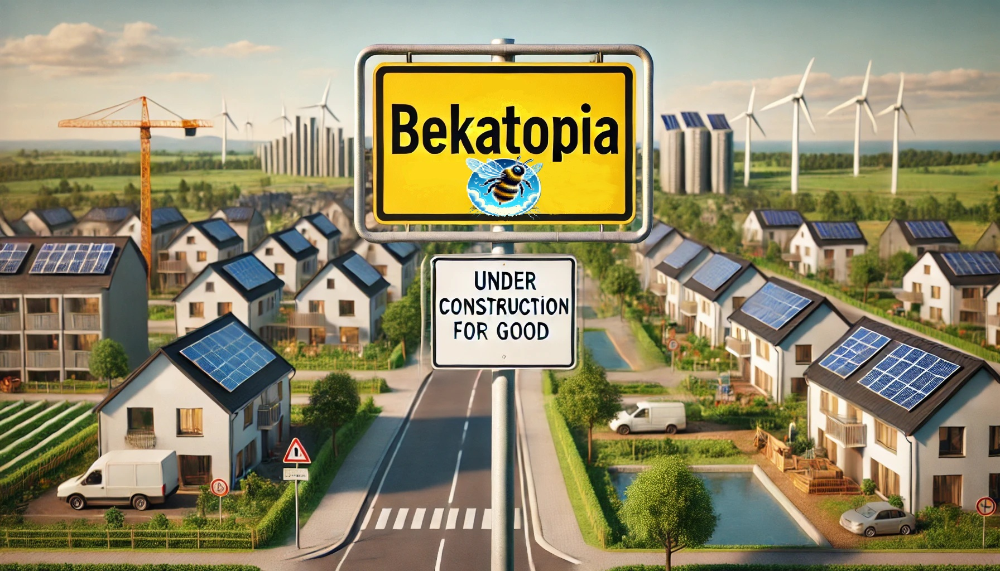

Herzlich willkommen auf Bekatopia.de!
Ich bin B.K. (Birgit Karin) und lade dich ein, meine Vision für eine zufriedenere, gerechtere und ressourcenschonende Gemeinschaft kennenzulernen:
Ich teste diese Idee mit Hilfe von DeepGame, einem interaktiven Rollenspiel, das von Utile Labs entwickelt wurde. DeepGame lässt mich die Welt von Bekatopia erschaffen und steuern und ermöglicht es mir, die Auswirkungen meiner Entscheidungen in einer virtuellen Umgebung zu beobachten. Dabei reagiert die Simulation dynamisch auf mein Handeln, bietet Vorschläge und fordert mich heraus, das Szenario weiterzuentwickeln.
Aktueller Stand von Bekatopia
Derzeit arbeite ich daran, verschiedene Szenarien zu testen, die Bekatopia weiter verfeinern. Dabei suche ich nach Mentoren, Kritikern und neuen Ideen, die das Projekt bereichern. Wenn du interessiert bist, dich einzubringen oder Feedback zu geben, freue ich mich auf deine Nachricht!
Haben wir keine anderen Probleme?
Doch, sogar viele! Aber genau deshalb möchte ich das Problem bei der Wurzel packen anstatt nur die Symptome zu bekämpfen. Auch ich habe Bedenken und Zweifel, aber ich habe auch Hoffnung. Denn ich habe schon fliegende Hummeln gesehen, aber noch nie kotzende Pferde!